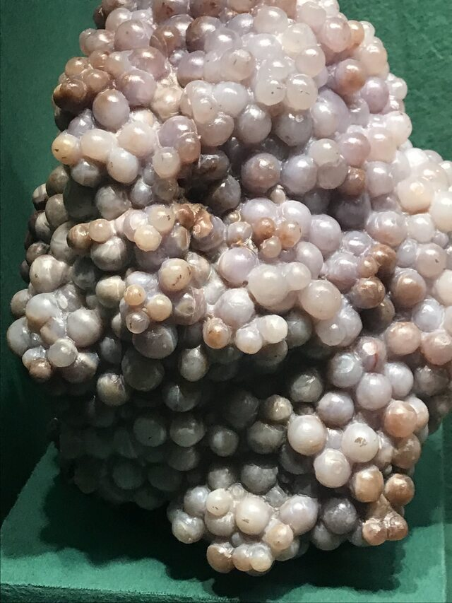
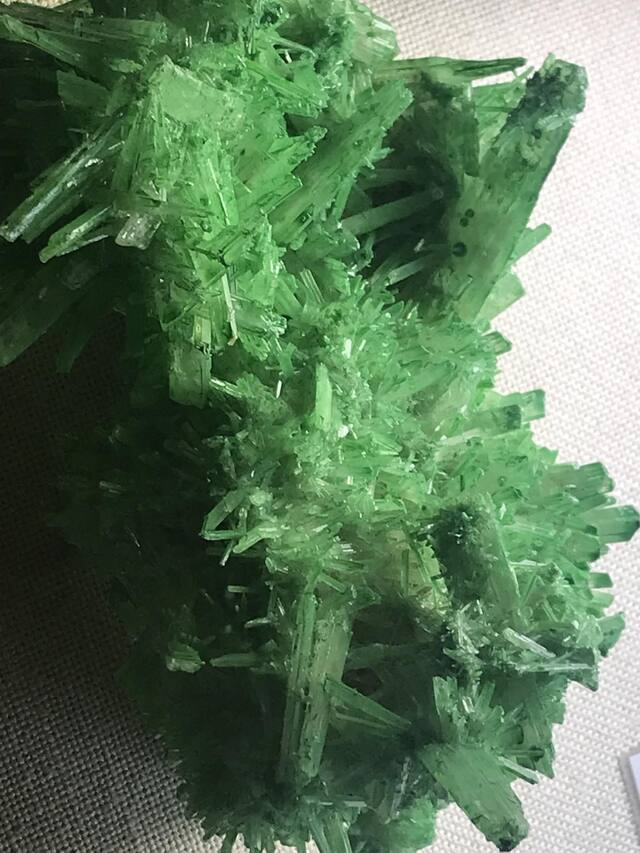
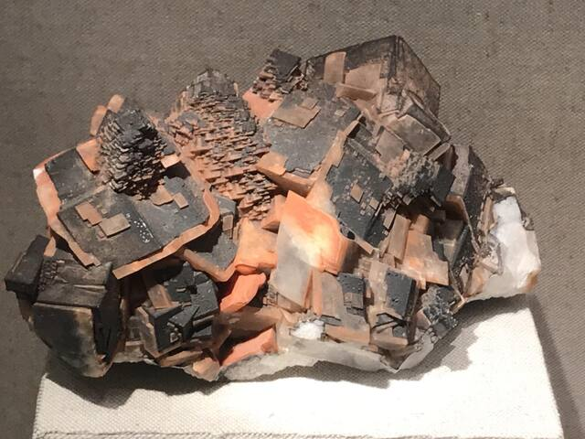
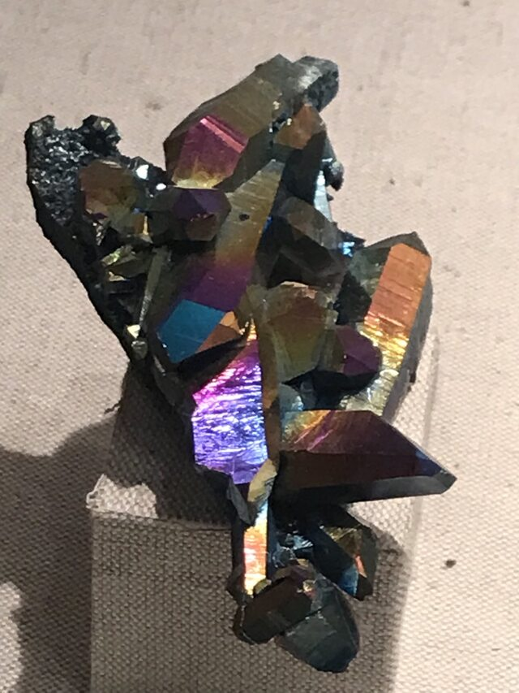
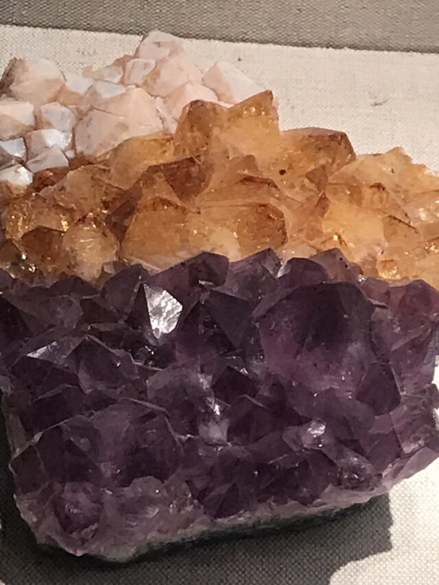
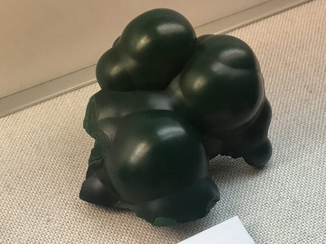

An amazing museum dedicated to unusual stones and minerals. Despite the small area, the exposition is represented by hundreds of unusual exhibits. Here you can see minerals of the most amazing colors and shapes, precious metals and stones, and even fragments of space meteorites collected in Germany. This museum is a great place for everyone who wants to see something new and unusual, as well as for those who are not indifferent to science.
Need more information?
Use link for official page (opened in new tab)Adress:
Grindelallee 48
20146 Hamburg





